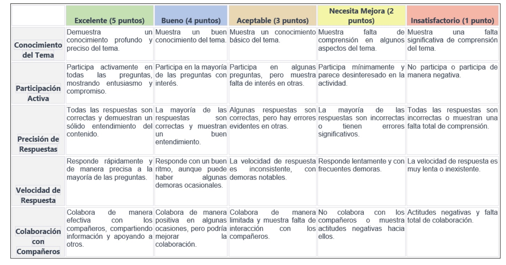

EL UNIVERSO
EVALUACIÓN
NOS PONEMOS A PRUEBA
A continuación de las exposiciones orales, se llevará a cabo un cuestionario en papel, con 20 preguntas. Cada pregunta tendrá 3 posibles soluciones. Cada pregunta tendrá un valor de 0´5 puntos.
El cuestionario nos ayuda a evaluar vuestra comprensión respecto a los temas presentados durante la exposición oral. Las preguntas pueden abordar los conceptos clave, detalles importantes o mensajes centrales de la presentación.
Al proporcionar el cuestionario justo después de la exposición, se puede obtener retroalimentación inmediata sobre lo que habéis aprendido.
Con este cuestionario, se fomenta un nivel más activo de participación y compromiso. Debéis recordar y aplicar lo que habéis aprendido durante las exposiciones, lo que puede fortalecer la retención de información.
Evaluación por parte del profesorado
Con esta herramienta pretendemos ver el punto de conocimiento desde donde partir sobre el Universo. A través de una serie de preguntas, con varias opciones de respuestas, marcaréis las que creáis correctas, y obtendremos unos resultados, que podremos analizar.
Con el uso de esta rúbrica, nos va a proporcionar un feedback más detallado, directo y específico sobre la clase.
Nos va a ayudar a garantizar que la evaluación sea equitativa, ya que establece estándares consistentes para todos vosotros y vosotras.
Puede ser utilizada como un instrumento para fomentar la reflexión. Podéis revisar la rúbrica después del Kahoot para comprender mejor vuestro rendimiento y considerar cómo pueden mejorar en el futuro.

Obra publicada con Licencia Creative Commons Reconocimiento Compartir igual 4.0